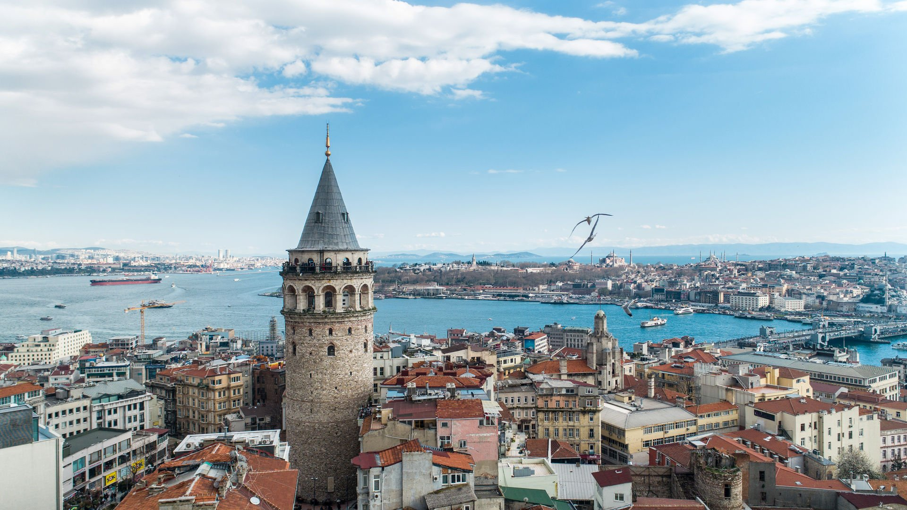

| ANASAYFA | İLETİŞİM | YAPIM | HAKKIMIZDA |
| GALATA KULESİ/İSTANBUL |
|  |
Kule yığma moloz taş örgü sistemde inşa edilmiştir. Dış cephe taş örgüdür. Girişte ki kitabede 16 mısralık methiye II. Mahmut döneminde yapılan restorasyondan dolayı II. Mahmut içindir. Kapının üzerindeki yuvarlak kemerli pencere askerlerin gözetleme yeri idi. Yüksek giriş katından sonra dokuz katlı bir yapıdır. Silindirik gövdesi üzerinde ki pencereler tuğla örgülü yuvarlak kemerlidir. Külah çatının hemen altındaki son iki katın gelişimi silindirik gövdeyi çevreleyen profilli silmelerle vurgulanmıştır. Külah çatının altındaki katı sarmalayan metal süslemeli şebekeli seyir balkonu mevcuttur.alt katında ise derin Nişli payelere oturan yuvarlak kemerler ve içerisinde tuğla örgü yuvarlak kemerli pencereler mevcuttur.
Bugün yapının üçüncü kata kadar olan kısmının Ceneviz, diğer katlarının Osmanlı karakteri taşıdığı gözlenmektedir. Yapı günümüzde sosyal ve kültürel faaliyetler için kullanılmaktadır. Strüktürel olarak sağlamdır. Galata kulesi ilk olarak Bizans imparatoru justinianos tarafından M.S. 507-508 yılında inşa edilmiştir. Günümüzdeki kuleyi 1348-49 yılında Cenevizliler yeniden inşa etmiştir. Kule 1445-46 yılları arasında yükseltilmiştir. 1500'lü yıllarda depremden zarar görerek, mimar Murad bin Hayreddin tarafından onarılmıştır .
III. Selim döneminde kule onarıldıktan sonra, kulenin üst katına bir cumba eklenir.1831'de kule bir yangın daha geçirir, II.Mahmut kulenin üzerine iki kat daha çıkar ve külah biçiminde olan ünlü dam örtüsüyle kulenin tepesi kapatılır. 1960 yılında tekrar restorasyon yapılır.1864'teki imar çalışmalarında eteğindeki avlusunu, kapılarını, kıyıya inen sur duvarlarını kaybetmiş, hendekler doldurulmuştur. Kulenin dibinden itibaren bir taraftan tepebaşı, diğer taraftan Tophane’ye uzanan Türk mezarlığı yok edilmiştir. Eski ahşap Türk evlerinin yerine, batı tarzlı apartmanlar yapılmıştır. Yapı son olarak 1967'de onarım görmüştür.
Ulaşım:
Özel araçla; Tarlabaşı yolundan Taksim'e çıkarken sol tarafta Galata Kulesi tabelasından girerek ulaşabilirsiniz. Aracınızı kule çevresinde yer alan otoparklara bırakabilirsiniz. Toplu ulaşımla; Öncelikle Taksim'e ulaşıyorsunuz. Ardından İstiklal Caddesini baştan sona geçtikten sonra caddenin sonundan yaklaşık 500 metre aşağıda kuleye ulaşabilirsiniz. Eminönü tarafından gelmek isterseniz Karaköy yolu üzerinden Bankalar caddesinden yokuşu çıkarak ulaşım sağlayabilirsiniz veya tüneli kullanabilirsiniz.